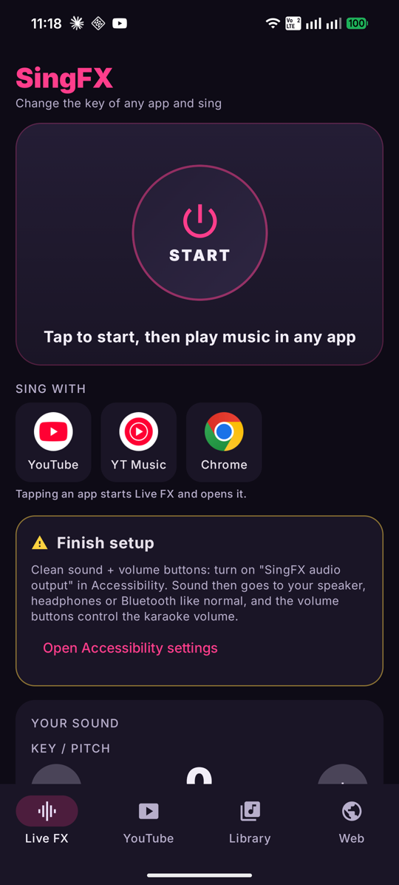
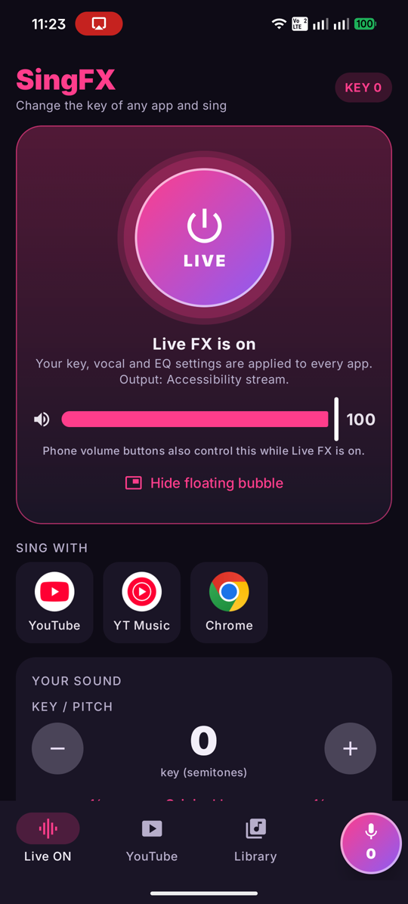
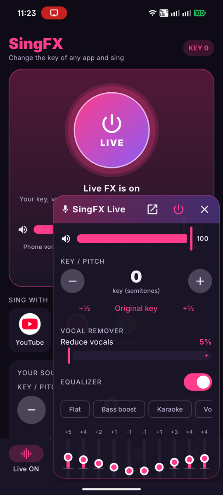

Change the key of YouTube, or any app on your phone, and sing karaoke in your own range. Vocal remover and EQ included.
Free · open source (GPL-3.0) · Android 10 or newer · no ads, no tracking



Live FX processes the sound from YouTube, YouTube Music, Chrome and most other apps. Move the key up or down in half steps.
A bubble floats over the app you're singing with. Tap it for key, vocal remover, EQ and volume.
Reduces the lead vocal on most studio tracks so you can sing over the music.
Presets for karaoke, bass boost, vocal boost and more, plus an output boost with a limiter.
Plays songs and videos from your phone, YouTube search, any web page, and direct media links. Includes speed control and an A–B loop.
While Live FX is on, your phone's volume buttons control the karaoke volume.
SingFX.apk. If asked, allow your browser or file manager to install unknown apps."Restricted setting" when turning on SingFX audio output? Android blocks accessibility settings for apps installed from a download. Open Settings → Apps → SingFX, tap the ⋮ menu (top right), choose Allow restricted settings, then go back and turn it on. SingFX also works without it: sound then plays on the alarm channel, and the volume buttons work less smoothly.
Apps that block audio capture (Netflix and some music apps) can't be processed. Live FX adds a small delay of about 0.1–0.2 seconds. The built-in player has none.